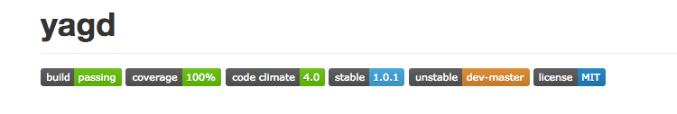
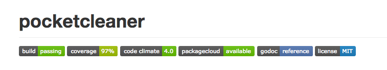

Take Pride in Your Code
If you’re working as a software engineer, you have very likely already heard about ‘egoless programming’. The notion that you should detach your code from your ego. That criticizing your code is not a personal attack and that at some point your code is going to get deleted. Maybe you have even gone as far as seeing a lot of your work as “throw away code”, because most things are supposed to help you in the moment and not last forever. And these are all good things to learn and internalize. And definitely traits every programmer should have. However as I tweeted some weeks ago, I’m convinced the biggest trick the devil ever pulled there is convincing everyone you shouldn’t take pride in your code. Which so often leads to half finished proof of concepts stuffed into a git repo. Repositories whose README might as well just say “works for me”. And of course most of the time there aren’t any tests, so when you want to make things better, you have no idea where to start. And often enough the justification is just something like “I needed this code and maybe it’s useful to someone else” or “it’s pretty simple, it would have taken me longer to write tests than the actual code”.
And I think this doesn’t have to be. All of this talk about egoless programming and throwaway code doesn’t mean you can’t take pride in what you create. As a programmer (and that includes ops people, security engineers, designers, etc - if you commit to a repo, you’re a programmer; don’t let anyone take this away from you) you now have access to a myriad of wonderful tools and services that make it so much fun to write and use software.
The README
I almost feel like this goes without saying, but you should take some time to write a proper README. It might take 15 or 30 minutes for you to write it. But if 2 other people don’t have to spend 10-20 minutes figuring out how your project is supposed to be used or if it even solves their problem, it has already saved time. The usual things like usage examples and installation instructions should go in there. Plus as you probably know, GitHub shows READMEs very prominently in a nicely rendered way. So your project already feels a lot nicer to use.
And while you’re there, also create a CONTRIBUTING.md. GitHub will show it
whenever someone is creating a pull request. So you can put some information
in there how you would like to receive contributions which can act as some
helpful guidelines and make it a lot less scary and awkward to contribute.
Unit Tests and Code Coverage
It’s no secret that I’m a fan of writing tests. And it has really become more fun over the last years as frameworks and best practices have improved. In basically all languages there exists now at least one unit testing framework that is easy to use. Some languages even come with one in their standard library. So there is no real reason to not write tests. After all you are already testing your changes manually. Why not have the computer do the tedious work? If you’re looking for some introductory material on testing, we have open sourced our Testing 101 material we use at Etsy to teach testing. The point here is not that you will never have bugs in your code because you write tests. You are gonna reduce the number of bugs for sure. But more importantly it provides some confidence factors for contribution and sets a visible expectation of what things are being automatically tested. Beyond that it provides example code for how to use your code and codifies the intent you had while writing the original functions. It also automatically serves as a first client for your API outside of the intended use case the code was written for. Thus often uncovering a good chunk of design problems.
And while you’re at it, add code coverage as well. Coverage is one of those
tools that most people either love or hate. But the main point for me is that
it sets expectations for which parts of your code are regularly exercised
through tests. Not more not less. It’s also not a simple way to make sure you
never have bugs. It can’t, as it’s a tool that is concerned with syntax and
not semantics of your code. But what it can do is make you think about code
paths more explicitly. And through that make you think more about how to test
things. And also add instructions about how to run the tests into the
CONTRIBUTING.md file so prospective contributors don’t have to guess or
search.
Continuous Integration
Once you have tests, the next logical step is to run them on a continuous integration service. I love Travis CI for this but there are many others out there. Most services now support GitHub pull request status updates which makes it so much less work to maintain external contributions to your project as you’ll immediately see whether or not the pull request passes tests. But the most important bit about hooking up a CI system to run your tests are the fact that you’ll know it works somewhere else besides your laptop. Plus it gives you a platform to trigger many other useful things (which I will talk about in a bit) after your tests have successfully run. And for that you can even just use the Jenkins setup you probably already have at work or any other CI setup really.
Code style and Static Analysis
Another thing I really enjoy is the renewed rise of static code analysis tools. And I’ll just throw code style checkers in that same bucket. I’ve met quite a lot of people who hate coding style checkers. The arguments usually go like this: “if you can’t read an if statement with a missing space before the curly brace I don’t want you to write production code anyways”. It’s amazing how many people have strong opinions on things they claim to not matter. The point here is not so much the correct way of writing code but rather a consistent way. Chances are your code is being read by a good number of people, depending on how important/popular it is. Having a consistent style makes it easier to read. Code without style guidelines can be like reading a book where every page was printed in a different font. It doesn’t matter for functionality but it would be a lot more annoying to read. Plus there is literally almost no overhead. Most languages have editor plugins now that will format text for you, some languages even come with tooling. But what it shows is that you care about this code to be readable and accessible. And that you have an easy way of making these coding styles visible and applicable. Static analysis is usually a less contestant topic. There are usually a lot of things that aren’t immediate problems but are helpful fixes. And it’s as well a sign of you caring about the quality of your code.
Codeclimate is a wonderful service I use to do this. It has static analysis plugins for a lot of languages and is super easy to set up. It integrates with the Github status API and shows changes for every commit and pull request. That way you can have a computer enforce things like indents, formatting, and problems that a static analyzer can find and you can concentrate on the logic and spirit of the change.
Packaging and Deployment
These are topics very dear to my heart. A good packaging and deployment setup makes the user experience of software so much better. Not having to think about where to copy that one file, no need to curlbash some weird script, having things come from the package manager you already use. All those things make it a wonderful experience to get started on a piece of software. And the state of things there also only has gotten better over the years. A lot of the language specific package managers now have nice tooling around creating and uploading install packages for their platform. Some like packagist even go so far as to just fetch things for you from GitHub and create releases on tags automatically. There is literally no reason to not have your PHP project on there. But even ruby gems and Python modules you can upload easily in an automatic way from your CI system. Travis CI has a whole section on deployments and integrations with most of the popular services. So do other CI platforms. fpm has made it ridiculously easy to build packages for Linux. And with packagecloud you can host them in an amazingly accessible and user friendly way. You can even have your packages built and uploaded from your CI system as well with something like this:
NAME=restclient-cpp
VERSION = $(shell git describe --tags --always --dirty)
BUILDER = $(shell echo "`git config user.name` <`git config user.email`>")
PKG_RELEASE ?= 1
PROJECT_URL="https://github.com/mrtazz/$(NAME)"
FPM_FLAGS= --name $(NAME) --version $(VERSION) --iteration $(PKG_RELEASE) \
--epoch 1 --license MIT --maintainer "$(BUILDER)"
--url $(PROJECT_URL) --vendor mrtazz \
--description "C++ client for making HTTP/REST requests"
--depends curl usr
# build rpm and deb
fpm -t rpm -s dir $(FPM_FLAGS)
fpm -t deb -s dir $(FPM_FLAGS)
# deploy to package cloud
package_cloud push mrtazz/$(NAME)/el/7 *.rpm
package_cloud push mrtazz/$(NAME)/debian/wheezy *.deb
package_cloud push mrtazz/$(NAME)/ubuntu/trusty *.deb
Or use their integrated deployment provider which his even less setup work.
Documentation Deploy
And speaking of automatic build and deploy. The same goes for documentation.
One of the most genius features of GitHub in my mind is the fact that every
repository can have a gh-pages branch whose contents are getting published
as a website under http://username.github.io/reponame. This makes it
extremely easy to host a documentation page for your project. And with
GitHub’s CNAME support you can even have a custom domain for your project
point to it. The fact that it’s just another branch in your repository means
that you can easily automate the deployment of docs alongside your code for
example from (you probably guessed it by now ) your CI system. Thanks to
GitHub pages this is as easy as:
# generate docs
install -d docs
echo "projecturl: $(PROJECT_URL)" >> docs/_config.yml
echo "basesite: http://www.unwiredcouch.com" >> docs/_config.yml
echo "markdown: redcarpet" >> docs/_config.yml
echo "---" > docs/index.md
echo "layout: project" >> docs/index.md
echo "title: $(NAME)" >> docs/index.md
echo "---" >> docs/index.md
cat README.md >> docs/index.md
# deploy to github
cd docs
git init
git remote add upstream "https://${GH_TOKEN}@github.com/mrtazz/$(NAME).git"
git submodule add https://github.com/mrtazz/jekyll-layouts.git ./_layouts
git submodule update --init
git fetch upstream && git reset upstream/gh-pages
git config user.name 'Daniel Schauenberg'
git config user.email d@unwiredcouch.com
touch . && git add -A .
git commit -m "rebuild pages at $(VERSION)"
git push -q upstream HEAD:gh-pages
If you run this from Travis CI with an encrypted GH_TOKEN environment
variable, make sure to suppress command echo-ing for the git remote add
command as it will otherwise write your token to the log in plain text.
And even if you just start with publishing your README, you have a nice website in place already to build upon. Maybe add doxygen or other reference generation to it. Add a better getting started guide. Maybe someone else contributes their notes. It’s more likely the easier it is to do. And it makes documentation contributions look more like the first class contribution they are. And less like a nice side addition. Which is something almost every project can benefit from.
Build and Automation
With all those wonderful things in place and hooked up, you also want to
optimize for the common part of contributing. The local feedback loop. So
while it is awesome to have all those services hooked up, it should also be
obvious how to run and test them while working on something. This is where
build automation via a tool like make comes into play. If you don’t have to
look at your Travis config how to run tests but instead can just run make test or make coverage to get coverage information or even make packages
to have debs and rpms build locally it’s a lot more fun to contribute. And
it’s not that much more work. When you hook up those things anyways, you can
then just run the make commands from your CI system as well. Which also makes
it a lot easier to debug if it goes wrong.
Show it off
And finally please let everyone know that you have all those things in place for your project. Most CI systems and other services now support an HTML embedded badge that shows the build status, code coverage percentage or static analysis results in a little image. It is green when things are ok and red or yellow otherwise. Which lets everyone know the current status of your project immediately when loading the README on GitHub or the website of your project. For everything else there is shields.io which lets you create custom badges via a simple URL structure so you can have the license you use, the location of the packages and other things that are not red/green right up there.
 
Do I really have to do all of this?
I’ve given a lot of examples for things you can or should do to make your project nicer to use. And there are a myriad more, Heroku deploy buttons, npm dependency checkers, slack links, etc. I’ve mostly focused on a very specific set of things I use regularly for my projects. And it’s also very much focused on open source repositories or at least repositories hosted on Github.
I’m very aware that not all of these things always apply to or make sense for a project. Some languages don’t have the support of your coverage platform. You want to use another CI service. Your code is hosted in your corporate network and you don’t think you have the time to set all of these things up.
The real answer here is to always try to strive for this. A lot of setups can literally be copy and pasted once you’ve done it for one project. And again while all the services mentioned are public ones, there are a lot of integrations you can emulate in house with your existing CI and deployment system and some HTML. If you only do a third of the things I described here your project will already be in much better shape. And people will be more happy to (have to) use your code. Which in my mind is something to be proud of.